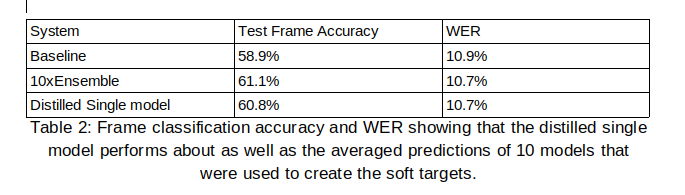
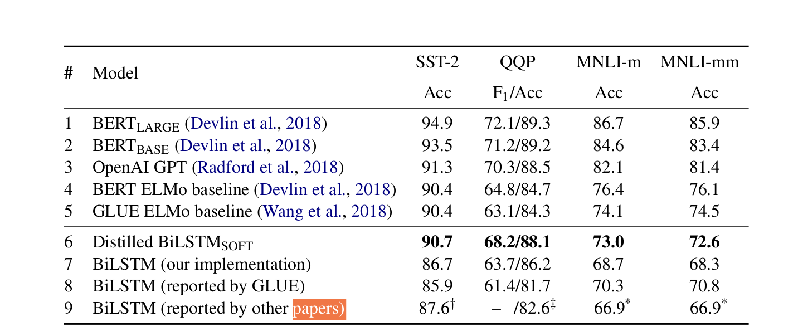

Knowledge Distilation for Deep Neural Network
Written on September 4th, 2019 by Hoang PhamDeep Neural Networks (DNN) have recently achieved great success in many natural language processing as well as computer vision tasks. However, they are becoming increasingly deeper, complex, computationally expensive and memory intensive. Some representatives of this trend are the deep language representation models, which includes BERT, ELMo, and GPT. This hinders their deployment in devices with low resources or in applications with strict latency requirements. Therefor, a natural thought is to perform model compression and acceleration in deep networks without significantly decreasing the model performance.
Model Compression and Acceleration
In this part, I will introduce you model compression/acceleration and its four schemes: parameter pruning and sharing, low-rank factorization, transferred / compact convolutional filters, and knowledge distillation.
What is Model Compression and Acceleration?
Compacting and Accelerating NNs model techniques
 In Table I, we briefly summarize these four types of methods [1]. Generally, the parameter pruning & sharing, low-rank factorization and knowledge distillation approaches can be used in DNN models with fully connected layers and convolutional layers, achieving comparable performances. While methods using transferred/compact filters are designed for models with convolutional layers only. In addition, regarding the training protocols, models based on parameter pruning/sharing low-rank factorization can be extracted from pre-trained ones or trained from scratch. While the transferred/compact filter and knowledge distillation models can only support train from scratch.
In Table I, we briefly summarize these four types of methods [1]. Generally, the parameter pruning & sharing, low-rank factorization and knowledge distillation approaches can be used in DNN models with fully connected layers and convolutional layers, achieving comparable performances. While methods using transferred/compact filters are designed for models with convolutional layers only. In addition, regarding the training protocols, models based on parameter pruning/sharing low-rank factorization can be extracted from pre-trained ones or trained from scratch. While the transferred/compact filter and knowledge distillation models can only support train from scratch.
Knowledge Distillation
In this research, we will focus on Knowledge Distillation method which can compress deep and wide networks into shallower ones, where the compressed model mimicked the function learned by the complex model. The main idea of KD based approaches is to shift knowledge from a large teacher model into a small one by learning the class distributions output via softmax.
In [2], knowledge distillation is described as a compression framework which eased the training of deep networks by following a student-teacher paradigm, in which the student was penalized according to a softened version of the teacher’s output. The student was trained to predict the output and the classification labels. Despite its simplicity, it demonstrates promising results in various image classification tasks. It is validated on MNIST dataset and experimental results show that these methods match or outperform the teacher’s performance, while requiring notably fewer parameters and multiplications. Moreover, this research also investigate the effects of ensembling Deep Neural Network (DNN) acoustic models that are used in Automatic Speech Recognition (ASR). It shows that the distillation strategy that they propose in this paper achieves the desired effect of distilling an ensemble of models into a single model that works significantly better than a model of the same size that is learned directly from the same training data.

The work in [3] propose to distill knowledge from BERT, a state-of- the-art language representation model, into a single-layer BiLSTM and achieve comparable results with ELMo, while using roughly 100 times fewer parameters and 15 times less inference time across multiple datasets in paraphrasing, natural language inference, and sentiment classification.

With this approach, a shallow BiLSTM based model achieves results comparable to Embeddings from Language Models (ELMo; Peters et al., 2018), but uses around 100 times fewer parameters and performs inference 15 times faster. The methods of knowledge distillation provide many benefits such as directly accelerating model without special hardware or implementations. It is still worthy developing KD-based approaches and exploring how to improve their performances.
Summarization
I believe that if we know how different parts of a DNN behave, we can design student networks more cleverly and let them learn the teacher’s most important internal representations. Through that it help to transform our complex model to a simple model which could be run on CPU or deployed at the edge devices. Beside, in the scope of work of our company, I strongly believe that Knowledge Distillation can help to speed up our models as well as save the training costs. For example, some ML models of our company are using BERT in training and inference, if we can re-implement the work of [3] to create a small version of BERT, it will help a lot in reducing their storage and computational cost.
Reference
If you notice mistakes and errors in this post, don’t hesitate to contact me at [hoang dot a3 dot lqd at gmail dot com] and I would be super happy to correct them right away!